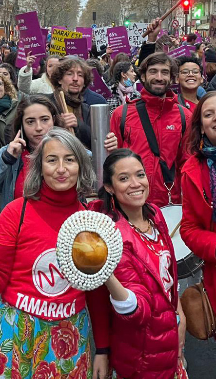
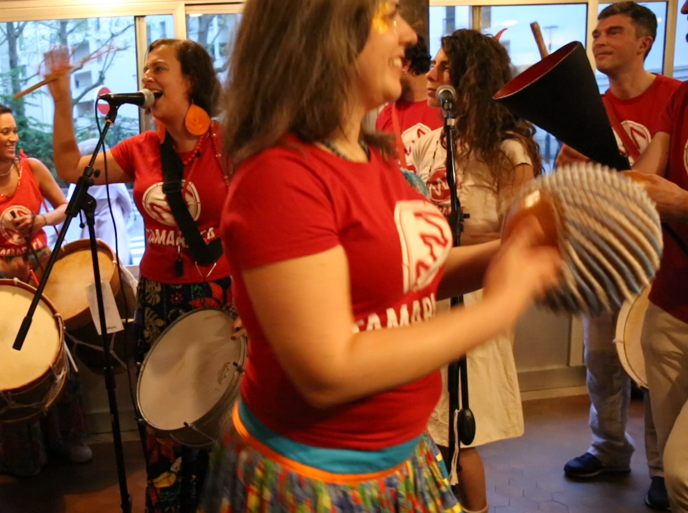

Apprentissage des cinq instruments du maracatu de baque virado
Sous la direction musicale d'Ana-Maria Constantinescu, chaque instrument est travaillé en détail à l'aide notamment d'exercices spécifiques et de moyens mémo-techniques.
Nous travaillons également la maîtrise du rythme, les chants, le rapport au corps, la posture, l'expression, l'écoute...
Mardi de 20h à 22h
Studio Bleu, Paris Xe
Tarifs réduits pour étudiants, demandeurs d'emploi, retraités
Une musique du Nordeste brésilien aux racines africaines
Le Maracatu de Baque Virado est une expression culturelle née à Recife, dans le Nordeste du Brésil. Issue des traditions africaines amenées par les esclaves, cette musique puissante et hypnotique accompagne les cortèges royaux des "Nações" (nations) lors du carnaval de Recife et Olinda.
Groupe traditionnel de maracatu, organisé comme une "nation" avec sa propre identité
Le maître de cérémonie qui dirige la musique et les rituels
Moment fort où les nations défilent dans les rues de Recife
Une association fondée en 2010
Fondé par Celso Soares, percussionniste brésilien, et Ana-Maria Constantinescu, ancienne présidente de l'association Patakori, Tamaracá s'est construit autour d'un projet d'échange culturel entre le public français, le groupe Trovão das Minas (Belo Horizonte-Brésil) et le Maracatu Nação Estrela Brilhante de Recife.
Respectueux des origines brésiliennes du maracatu, Tamaracá revient régulièrement à la source en organisant des stages avec les grands Mestres de Recife et Olinda.
Aujourd'hui Mestre de la Nação Raízes de África, il est l'influence musicale principale du groupe.
Les cinq instruments traditionnels du maracatu
Grand tambour grave qui donne la pulsation profonde et la puissance caractéristique du maracatu. C'est le cœur battant de l'ensemble.
Caisse claire brésilienne qui apporte la texture rythmique et les ornementations. Son jeu utilise des baguettes flexibles.
Cloche métallique à deux tons qui guide le tempo et structure le rythme. C'est la référence temporelle pour tous les musiciens.
Percussion idiophone (calebasse entourée de perles) qui apporte la brillance et le groove. Le mineiro est un shaker cylindrique.
Le maracatu : une musique faite pour déambuler
Explosif et entraînant, le maracatu transforme chaque défilé en une expérience inoubliable. L'énergie percussive du groupe emporte tout sur son passage.
Demander un devis
Ciranda, coco, Afoxé, maracatu : Tamaracá, une énergie percussive
Au-delà du maracatu, Tamaracá explore d'autres rythmes traditionnels du Nordeste brésilien, offrant un voyage musical complet à travers les percussions afro-brésiliennes.
Une pratique musicale de groupe où les percussionnistes donnent de la voix
Les loas sont les chants traditionnels qui accompagnent le maracatu. Chaque Nação possède son propre répertoire, transmis de génération en génération.
Studio Bleu
7 rue des Petites Écuries
Paris Xe